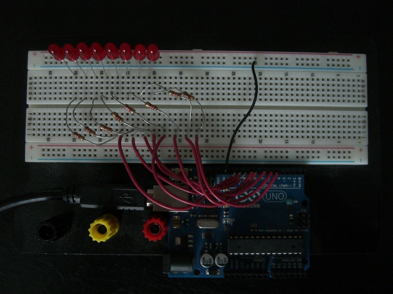
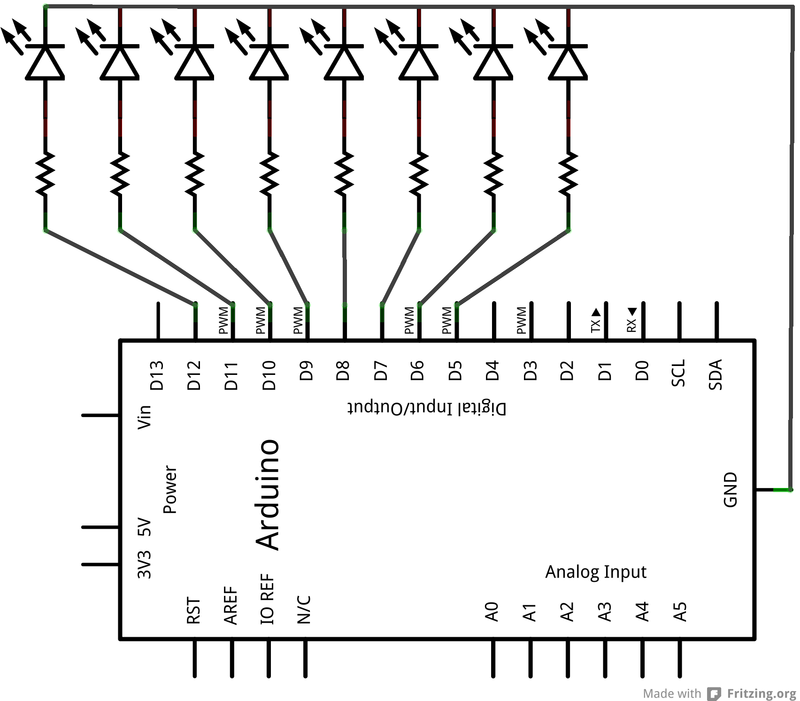
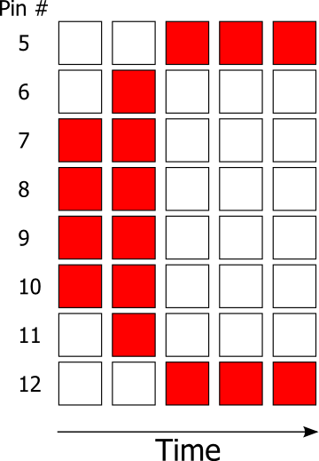
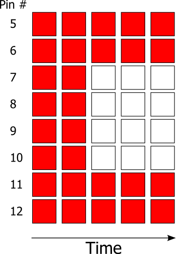
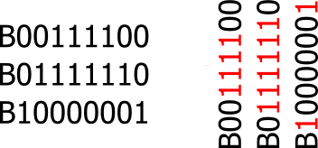

I'm a software engineer with a decade's worth of professional experience across the Health,
Supply Chain, AdTech, Energy/IoT devices, Food & Beverage, and Consulting industries.
On this site you'll find posts about various projects or interests I have.
This site itself is a single page HTML file that uses a small amount of Javascript to provide some
convenience for both me as the author and you as the reader. Directly below this, you'll find some tools
to help you better navigate the various posts.
Designing a new website
Posted on
I last went through a website redesign back in December 2015. At the time, I had just heard about
Asciidoctor,
and I was still heavily playing around with the Perl language.
To add a new page to my site, I'd type it up in Asciidoctor,
use some magical includes to get the common page header added, and then recompile the whole
site using a Perl script.
At the time, I thought this was really cool, but after 6 years and rarely (i.e. never) adding new content,
my custom tooling became a hinderance:
after years of not using it, I had forgotten how everything worked.
For my new site I knew that at the end of the day I wanted simplicity above all else:
No compilation or assembly steps, just plain old HTML.
A single file is sufficient. I'm not too worried about file size as modern websites weigh-in in the
megabyte range. My site consits of mostly text with only a few images sprinkled in.
Use of Javascript should be limited and only used to enhance the authoring and reading experience.
With those design considerations in mind and a few hours of work, I believe I've come up with a solution.
For content creation, the following pattern is used.
All content goes inside <section> tags
If it's a blog post I'm adding, I tag the section with a post class:
<section class="post">. Sections that do not use this class do not receive any Javascript enhancements detailed below.
Blog style posts have a <h1> and <time> tag within them.
By following the pattern outlined above, I was then able to use Javascript to consistently enhance blog-style
posts:
Content within <section class="post"> tags get automatically converted into
<details>
elements.
The contents of the first <h1> encountered are used for the details'
<summary>
If a <time> is present, it will be inserted before the title of a post in the
<summary>
The <h1> title of each post becomes a link to itself. This allows for linking to
specific posts and most browsers will scroll directly to the post content when following this type of
link.
Convenience buttons are added that can collapse or expand all posts.
Posts can be filtered by their content using a simple Javascript search function.
I'm happy with the results so far. As I mentioned above, this entire site is a single page including all
styles and Javascript.
A Simple Presentation DSL in Tcl
Posted on
Background
As I’ve written previously, one of Tcl’s greatest strengths is that it allows for the programmer to define
new, first-class constructs in the language. In this post, I’d like to touch upon another one of its
strengths: the ability to quickly create Domain Specific Languages.
Earlier today, I was watching a presentation given by Richard Hipp for the Tcl / Sqlite conference in 2020.
In his presentation, he gave the link to his slides. They were just simple HTML pages that linked to one
another.
Recently, I’ve been thinking more and more about Domain Specific Languages, so I figured I’d take a stab at
making a DSL that generated HTML pages from "presentation files".
First, I started by simply writing a presentation in my theoretical DSL, not thinking too hard about the
format. My goal was to write using an intuitive language and worry about the implementation later on.
Example presentation file
presentation-start
slide
title "A Simple Presentation DSL in Tcl"
- "Presented by Christopher Chase."
- "October 2021"
slide
title "Tcl"
- "Tcl is a dynamic lanugage...."
slide
title "Third page"
- "Bullet 1"
- "Bullet 2"
presentation-end
About 30 minutes later (it’d take shorter if I was using Tcl every day, but it’s been a while!), I had a
working implementation.
Implementation
array set presentation {}
proc presentation-start {} {
global presentation
unset presentation
array set presentation {}
set presentation(started) 1
set presentation(slideCount) 0
}
proc presentation-end {} {
global presentation
# Loop through each of the slides and generate output (e.g. HTML)
set currSlide 1
while {$currSlide <= $presentation(slideCount) } {
set isFirst [expr $currSlide == 1]
set hasMore [expr $currSlide < $presentation(slideCount)]
set isLast [expr $currSlide == $presentation(slideCount)]
# If we're on the first slide, use the title as the directory name
if {$isFirst} {
set dirName "$presentation(slide,$currSlide,title)"
file mkdir $dirName
cd $dirName
}
set fh [open $currSlide.html w+]
puts $fh "<h1>$presentation(slide,$currSlide,title)</h1>"
# Loop through each bullet on this slide
set currBullet 1
while {$currBullet <= $presentation(slide,$currSlide,bulletCount)} {
puts $fh "<p>$presentation(slide,$currSlide,$currBullet,text)</p>"
incr currBullet
}
if {$isFirst} {
# If currSlide is 1, we only link to next slide.
puts $fh "<a href='[expr $currSlide + 1].html'>Next</a>"
} elseif {$hasMore} {
# If 1 < currSlide < slideCount, we link to prev and next
puts $fh "<a href='[expr $currSlide - 1].html'>Prev</a>"
puts $fh "<a href='[expr $currSlide + 1].html'>Next</a>"
} elseif {$isLast} {
# If currSlide = slideCount, we link only to prev
puts $fh "<a href='[expr $currSlide - 1].html'>Prev</a>"
}
flush $fh
close $fh
incr currSlide
}
}
proc slide {} {
global presentation
set sNum [incr presentation(slideCount)]
set presentation(slide,$sNum,bulletCount) 0
}
proc title {t} {
global presentation
set sNum $presentation(slideCount)
set presentation(slide,$sNum,title) $t
}
proc - {t} {
global presentation
set sNum $presentation(slideCount)
set bNum [incr presentation(slide,$sNum,bulletCount)]
set presentation(slide,$sNum,$bNum,text) $t
}
The above code, less than 100 lines, reads a presentation file, and for each presentation, creates a new
directory and then for each slide of the presentation, creates a new HTML file that links to the previous or
next slide (depending on what page is being rendered.)
Defining until in Tcl
Posted on
Background
One of Tcl’s greatest strengths is the ability for
the programmer to seamlessly create new control structures.
In this example, we will define a new control structure called until.
Until takes two parameters: the first is a test condidtion and the
second is a script to run while the condition is not true. For example,
if we wished to print all numbers from 1 to 10, we could write the
following:
until {$i == 10} {puts $i; incr i 1}
This of course assumes that the variable i has already been initialized to some number.
Implementation
The first iteration and simplest form of our control structure, in pseudo-code, is as follows:
(1) Take the given test condition and run it in the caller’s scope.
(2) If the test is untrue
(3) Take the given script and run it in the caller’s scope
(4) Return to #1
Our first attempt at the code:
proc until {test body} {
# We run the test in the caller’s scope, but check its return value in this scope
if { ! [uplevel 1 $test] } {
uplevel 1 $body
}
}
Testing our procedure gives the following output:
set i 1
until {expr {$i == 10}} {puts $i; incr i 1}
> 1
> 2
We get two values back. The first, "1" is from our body-script’s put statement. The second, "2" is the return value of the incr command.
Now that we’re sure our until control structure’s process flow works for a single iteration,
we’ll modify it to run in a loop-like fasion. We do this by
simply replacing the inner if-statement with the built in while command:
proc until {test body} {
# We run the test in the caller’s scope, but check its return value in this scope
while { ! [uplevel 1 $test] } {
uplevel 1 $body
}
}
Again, we test:
set i 1
until {expr {$i == 10}} {puts $i; incr i 1}
> 1
> 2
> 3
> 4
> 5
> 6
> 7
> 8
> 9
We have one additional step which is to clean up the call signature to until:
until {expr {$i == 10}} {puts $i; incr i 1}
will become:
until {$i == 10} {puts $i; incr i 1}
To make this change, we move the call to expr from the test expression into our procedure:
proc until {test body} {
# We run the test in the caller’s scope, but check its return value in this scope
while { ! [uplevel 1 {expr $test}] } {
uplevel 1 $body
}
}
Calling our procedure, we get the following:
until {$i == 10} {puts $i; incr i 1}
> can't read "test": no such variable
The reason for this is because the uplevel call in our while loop runs the literal form {expr $test} instead of the expanded form {expr {$i == 10}}. This is due to the use of curly-braces.
If we replace the braces with quotes instead:
proc until {test body} {
# We run the test in the caller’s scope, but check its return value in this scope
while { ! [uplevel 1 “expr $test”] } {
uplevel 1 $body
}
}
We get another error:
until {$i == 10} {puts $i; incr i 1}
>invalid command name "“{expr"
The solution is actually much simpler than using braces or quotes. Uplevel concatenates all arguments together into a single list, and then performs its operation. That means we can do the following:
proc until {test body} {
# We run the test in the caller’s scope, but check its return value in this scope
while { ! [uplevel 1 expr $test] } {
uplevel 1 $body
}
}
Making an LED light writer
Posted on
Back in October, a friend of mine sent me a
link to a reddit post where the user austron was showing off an LED light writer he had built. I thought it would be fun to recreate this project using an Arduino.
The first step was to wire up some LEDs on a breadboard and get them connected to the Arduino. I forget exactly why I chose to use 8 LEDs, but it seemed like a good number at the time. As I show later, it turned out to be a good choice. Below is a picture of the breadboard and Arduino. In case it’s not clear what’s going on, take a look at the accompanying schematic.


There’s nothing special about the digital pins I used. If you wish to create this project yourself using the code I provide, you’ll need to use 8 pins that are sequential.
Since the light writer consists of a single column of eight rows, each character that will be displayed needs to be sliced up. Below are two of the many ways in which the letter C can be split up. I chose to go with the one on the left. (Red squares represent lit LEDs, and white squares are unlit LEDs.)


After splitting letters up, they can be easily represented in the Arduino sketch. During the fist iteration of my code, I did everything manually:
It’s a pain to have to write out all that code for a simple message. And what if I wanted to display a different message? I would need to copy and paste and rearrange, and end up with a big mess. Making a function for each character would eliminate some of this mess:
If I had done this for every character, I could display the word “hello” by typing:
h(); e(); l(); l(); o();
Being able to quickly call a single function is convenient, but writing out each column of each letter like I did for the C is not. If you go back and count, you’ll notice that I had to use digitalWrite() 18 times just to represent the letter C. If I had continued to do this with every letter, that would have been a lot of code!
Instead of wasting time typing that all out, I began to think of a compact way in which I could represent an entire column at once. A byte seemed to be perfect. It holds 8 bits, and each bit represents an on-off state. I had 8 LEDs, and each LED is either on or off. Now, Instead of a single line representing a single LED state, it could represent an entire column’s state! The picture below helps visualize how the letter is represented using bytes:

I created the function lightUp which takes one of these bytes and turns on the corresponding LEDs. As I mentioned earlier, it doesn’t matter what digital pins are used, so long as they’re sequential. The loop in in the lightUp function is the reason for this.
After converting entire columns to bytes and creating the lightUp function, the letter C could now be represented by this code:
5 lines instead of 18. Not bad! This could be made even more compact by having the lightUp function work on an array of bytes.
To further reduce the amount of code, I decided to store the message as a string. A loop could then be used to iterate over each character in the string, and that letter’s corresponding function called:
After adjusting the time delays between individual characters and words, I was able to come up with some decent results: